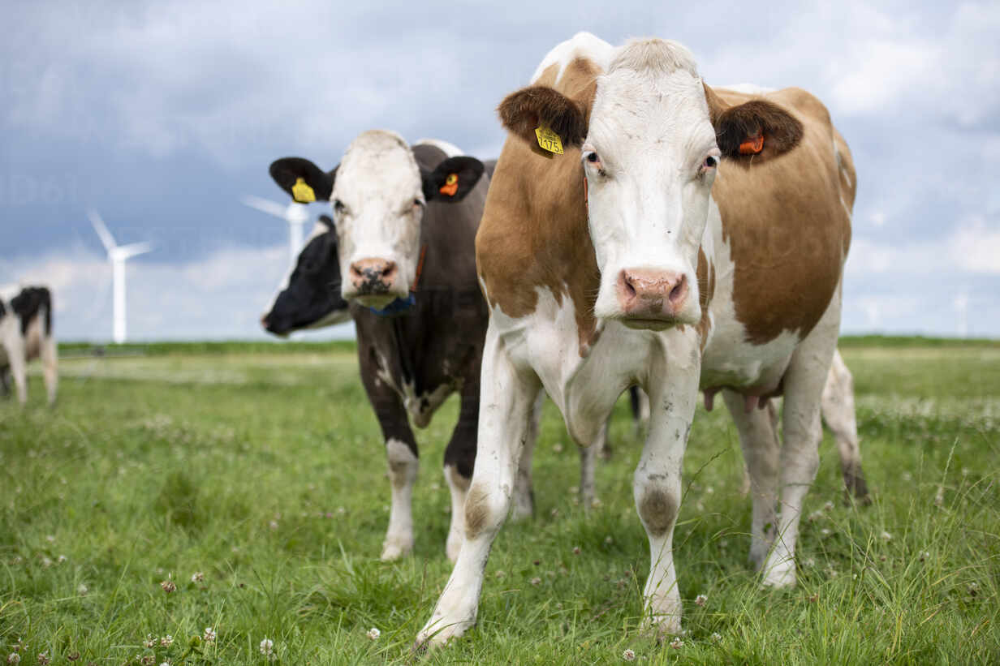

Meus projetos:

O manejo e cuidado com as vacas leiteiras
O manejo e cuidado com as vacas leiteiras abrangem diversas práticas, desde a alimentação até o ambiente de confinamento, com o objetivo de garantir a saúde, bem-estar e produtividade do rebanho

cuidados que você deve ter na hora da colheita
A regulagem do maquinárioAs condições da colheitadeira e de seus componentes impactam diretamente o desempenho da operação.
manejo Que Deve ter Durante O Plantio
O preparo de solo consiste na adoção de diferentes práticas e operações agrícolas antes do início do plantio. Seu objetivo é melhorar os aspectos físicos, químicos e biológicos do solo